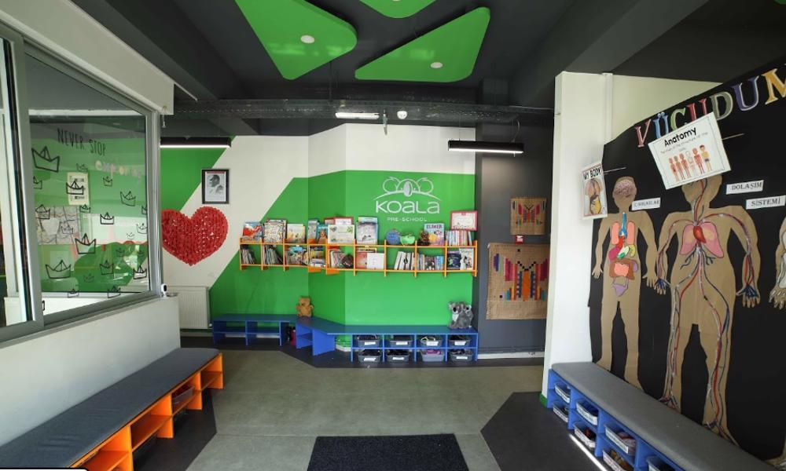

Okulumuz 1992 yılında Uzman Psikolog Selma KAZANCI ve ailesi tarafından Karşıyaka'da kuruldu. Kurulduğu yıllarda Karşıyaka’da eğitim veren ilk birkaç anaokulundan biriydi. Özenle oluşturulan eğitim kadrosu ve programları, çocukların mutluluğunu temel alan yaklaşımı, aileyle işbirliğine verilen önem ve yenilikleri takip ederek sürekli gelişime olan inancı sayesinde kalıcı olmayı başardı. 25 yılı aşkın süre boyunca çocuklarımızın sevgiyle, mutlulukla okula gelmesi, merak ve istekle öğrenmesi en büyük hedefimizi oluşturdu. Eğitimdeki her türlü yeniliği tecrübemizin süzgecinden geçirerek programımıza katmaya, konunun uzmanlarından hizmet içi eğitimler alarak kendimizi geliştirmeye özen gösterdik. Uzun yıllar gelişerek sürdürdüğümüz iş başarımızın kaynağı çocuklara duyduğumuz sınırsız sevgi ve bize çocuklarını emanet eden değerli ailelerin güveninden aldığımız güçtür. Okullarımızın öne çıkan özelliği kadrosundaki üç psikologla çocuklara karşı en sağlıklı yaklaşımı sergilemeye çalışması, öğretmenlere bu konuda rehberlik etmesi ve ailelerle arzu ettikleri her an işbirliği içinde olası problemlere hızlı ve pratik çözümler üretebilmesidir. 
Öğrencilerimiz için amacımız;
*Sorumluluk bilinci aşılamak,
*Uygun çalışma ortamı hazırlamak,
*Çalışma hevesini arttırmak,
*Çok çalışma yerine, etkili çalışmasını sağlamak,
*Nasıl daha iyi öğrendiğini anlamaya çalışmak,
*Çocuğun ne yapması gerektiğini anladığından emin olmak,
*Kontrol ederken önce doğru yaptıklarından başlamak,
*Başarısını takdir etmek,
*Yanlışlarında bir kez daha denemesini istemek,
*Öğretmeniyle iş birliği içinde olmaktır,
*Yaratıcı fikirler üreten, farklılıkları seven,
*Yeniliklere açık, ileri görüşlü, akademik olarak donanımlı,
*Yorgulayıcı, araştırmacı, düşünen, çözüm getiren,
*Yevreye duyarlı, kültürel değerlerine sahip çıkan,
*Geniş bakış açılı bireyler yetiştirmeyi hedefler,
*Sorumluluk sahibi, kendini bilen, kendisi için hedef koyabilen,
*Erken yaşlardan itibaren keşfetmeyi,
*Öğrenmeyi seven çocuklar yetiştirmeyi amaçlamaktadır.